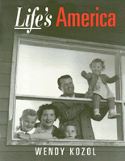

Life magazine's news photos reveal an unrealistic portrait of Cold War era politics and domestic life
Life magazine's news photos reveal an unrealistic portrait of Cold War era politics and domestic life


 Life magazine's news photos reveal an unrealistic portrait of Cold War era politics and domestic life
Life magazine's news photos reveal an unrealistic portrait of Cold War era politics and domestic life

|  |
Life's AmericaFamily and Nation in Postwar PhotojournalismWendy Kozolpaper EAN: 978-1-56639-221-1 (ISBN: 1-56639-221-7) |
"Historian Kozol explores the concept of domesticity portrayed in Life's imagery as a political and social ideology of the 1950s and 1960s.... The discussion of Life's influence on photojournalism and the photojournalist tradition...is exceptionally well done."
—Library Journal
As the first periodical to present news stories through photographs, Life appealed to middle-class Americans as they faced the conflicts and the rapid changes of Cold War society. Life's photo-essays rendered such pressing concerns as world and domestic politics, labor disputes, civil rights protests, and social and economic mobility as human interest stories. By focusing on families, these stories portrayed major social issues in terms of personal achievement and adherence to particular values.
Shaping a reassuring portrait of America, Life depicted the ideal family as white, suburban, and middle-class. For one representative feature story, the cover photograph shows an unfinished house in which a kneeling woman embraces two blond girls, and a man in a business suit protectively holds a toddler. The caption reads, "Family Buys 'Best $15,000 House.'" The cost of the house suggests this is a middle-class family with a bright future. The celebratory picture of this family with a bright future reveals no hint of the political and economic instability of the era.
Wendy Kozol's readings of such photographs and their accompanying texts show how Life normalized the affluent nuclear family and supported middle-class consumption by defining the family as much by their possessions as by their conformity to traditional gender roles. Photo-essays about other social groups also focused on nuclear families and the quest for the "American Dream"; minimizing the differences between social groups and experiences in this way enabled the magazine to present middle-class culture as a nationally shared ideal.
Using feminist and cultural studies perspectives, Kozol considers how layout, composition, lighting, framing, and subject matter influenced Life's representation of domestic ideology. Life's America examines the production of visual images that for generations captured the essence of American culture and shaped photojournalism.
"[This] polished and persuasive book...will make a significant contribution to our understanding of American culture and the critical role of Life in the formation of middle-class values. Kozol appreciates, as few contemporary scholars do, the importance of this premier pictorial journal as an historical resource."
—James C. Curtis
 | Wendy Kozol is Visiting Assistant Professor of History at Oberlin College. |
General Interest
Race and Ethnicity
Art and Photography
© 2015 Temple University. All Rights Reserved. This page: http://www.temple.edu/tempress/titles/944_reg.html.